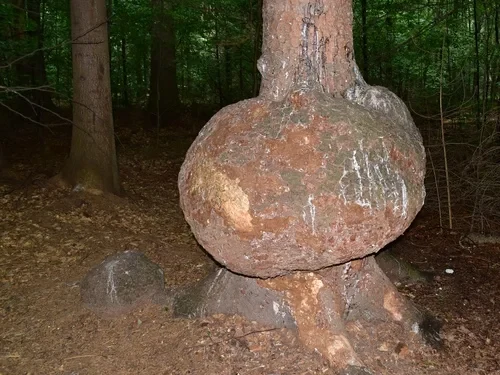
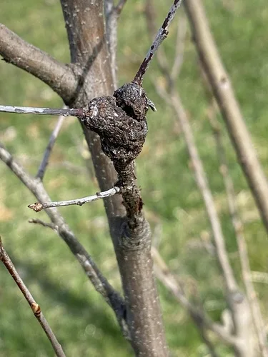
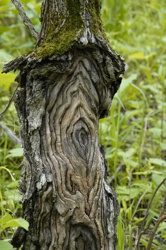
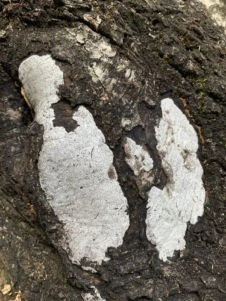
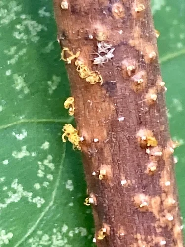

茎的问题

茎萎蔫检查下垂的茎是否还有弹性，茎基是否折伤，以及根团内部的干湿。

部分枝条干枯死亡顺着枯枝向下寻找活组织，看看分界处是否有折痕、凹陷或绑带勒伤。

枝条从顶端开始干枯比较向风和背风面的新梢，查看顶芽是否发褐及下部枝条是否仍有活芽。

茎变软腐烂观察软化是否始于土面，组织是否变暗及凹陷，有没有折伤。

茎上出现褐色的斑点拍下斑点边缘，看表皮是平整、木栓化，还是凹陷开裂。

没有扩大的浅色斑纹在斑痕旁放一把尺拍照，观察树皮是否已在伤口周围愈合，并对比边缘是否继续扩大。

叶腋有白色棉絮状小虫仔细查看叶柄连接处，寻找蜡絮覆盖的虫体及附近的蜜露。

可擦去的白色粉层观察粉层是否呈不规则斑块，是否同时覆盖叶、嫩茎或果面。

茎上出现灰褐色霉层检查霉层是否从伤口、凋谢花或坏死组织附近开始，观察茎是否仍坚实。

茎细长，叶色变浅比较新枝与旧枝的节间距离，看植株是否朝光源倾斜。

枝叶上有可剥离的小壳用放大镜检查叶脉和枝条上的突起，区分虫壳与植物本身的组织。

一个芽点生出成簇细枝比较枝簇与正常分枝，检查周围是否曾修剪或有伤口。

茎上有深色异常增生记录增生位于根颈、枝条还是伤口附近，观察表面是否粗糙。

长触角甲虫与枝干孔洞查看枝干是否同时有圆孔、碎屑和衰弱枝，单只成虫停留不能确认木内有幼虫。

李树和樱属枝条长出硬黑结落叶后最容易看清黑结。樱树末端小枝上的结与包住李树主干的结，处理方式不同。

树皮凹陷，边缘形成层层同心脊一道道脊反映树体曾试图包围受伤组织。脊纹数量、排列和完整程度，比远看树皮颜色更有判断价值。

枯死细枝上长出珊瑚色小垫状物剪桩上的粉橙色小垫能提示检查位置，还需区分菌体只长在旧枯木上，还是邻近活短枝也在枯死。

山杨树皮剥落，溃疡边缘橙黄山杨的局部树皮看似尚完整，上方的枝却可能挂着枯叶。结合病斑阶段和衰弱枝位置判断较可靠。

栎树脱落的树皮下露出成片菌层久旱后栎树树皮下出现大片菌层，要先辨别菌层位于枯枝、活枝还是主干。

栗树树皮出现橙色小疱栗树单枝枯死时，沿枝向基部追查。若枯活交界的粗糙树皮有橙色结构，比远处散落的褐叶更有参考价值。

松枝上长出球形木质瘿瘤松枝上的木球在春季产孢时更醒目。发生在小侧枝还是中央主梢，将影响受害范围。

松树新梢短缩，旁边球果鳞片出现黑点多根松梢变褐时，针叶长短有助于判断停止生长的时期。取病梢、健梢和老球果，比只收集褐色落针更有用。

树干长出下表面发白的硬质层架状菌体木质菌架可能跨季留存，先检查着生处，再判断直立树干是否需要专业评估。

桧柏枝瘿上长出橙色胶角雨后，桧柏枝上的木质圆瘿冒出一圈橙色胶角。